custom wedding cake stand
quite a bit of research was done into the design and functionality of this custom wedding cake stand.
inspiration was taken from various realms - other cake stands, geometric math principles, to various famous buildings.
inspiration was taken from various realms - other cake stands, geometric math principles, to various famous buildings.
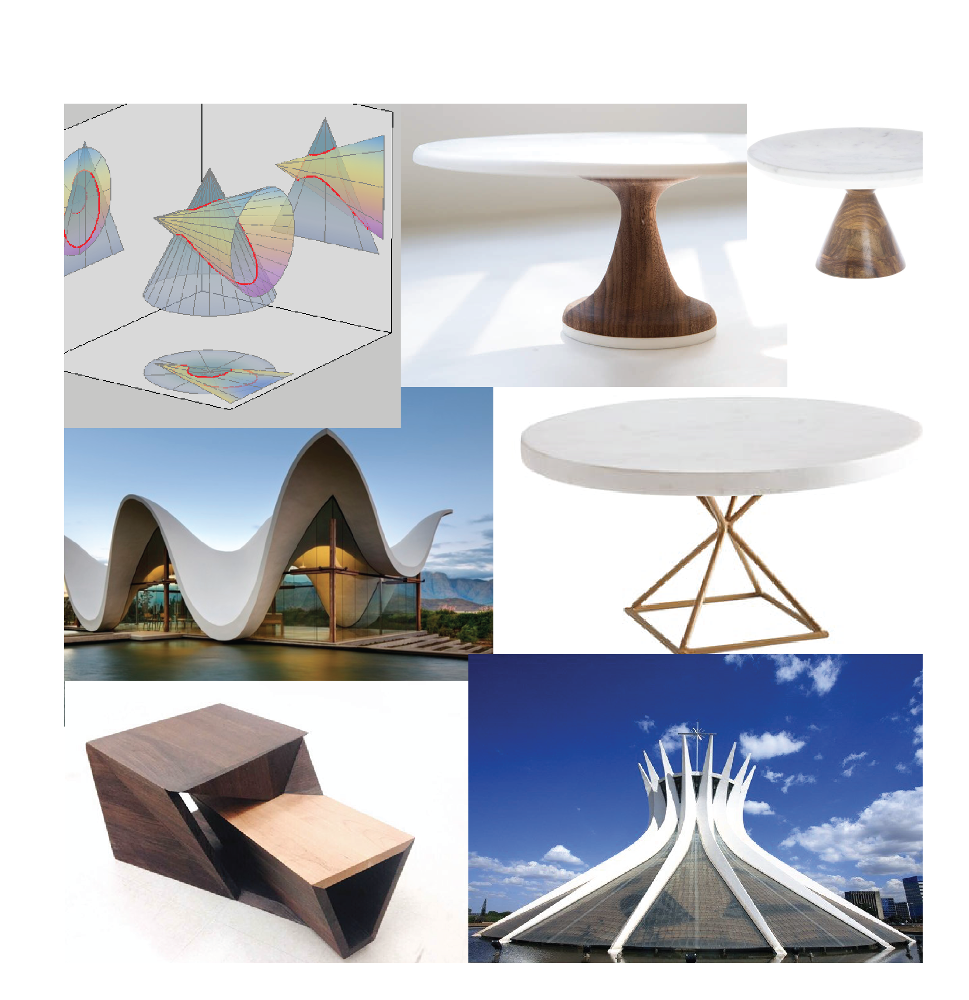
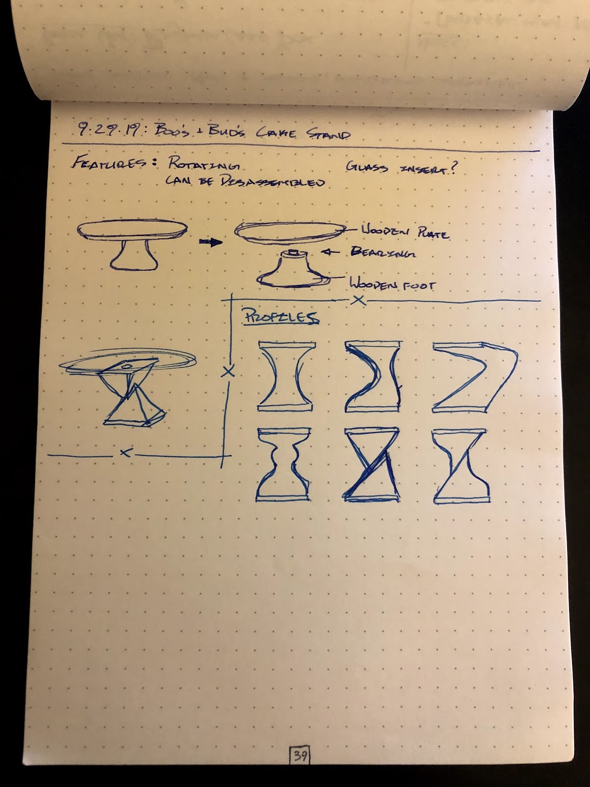
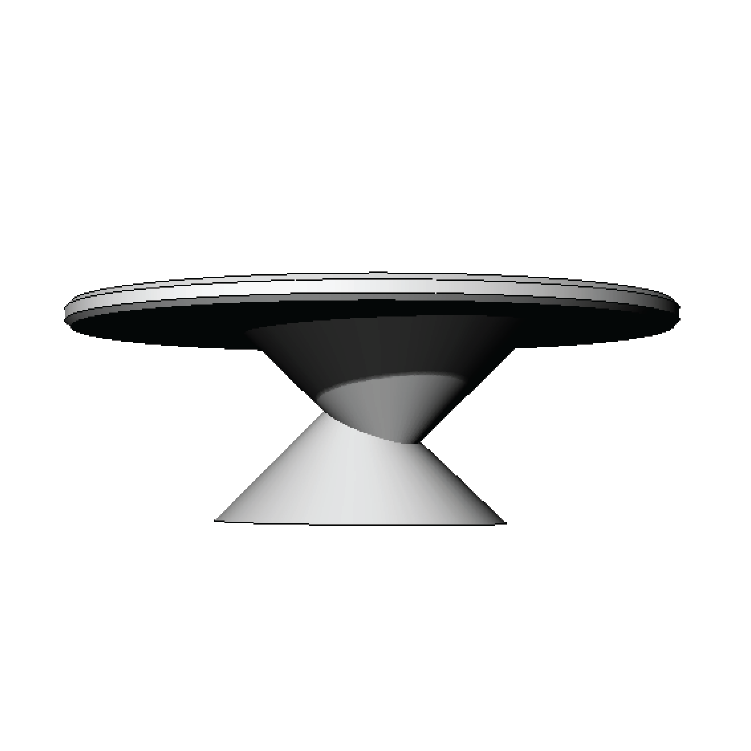
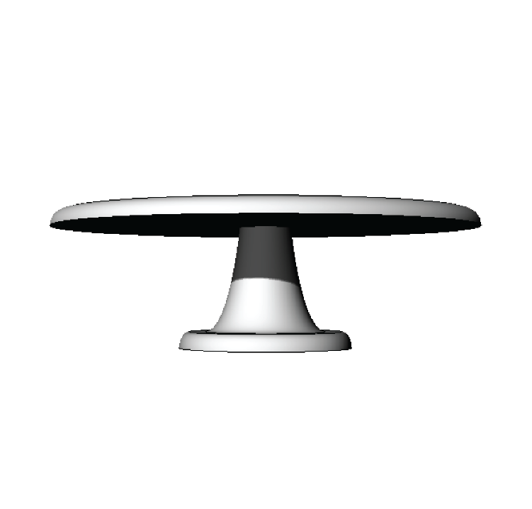
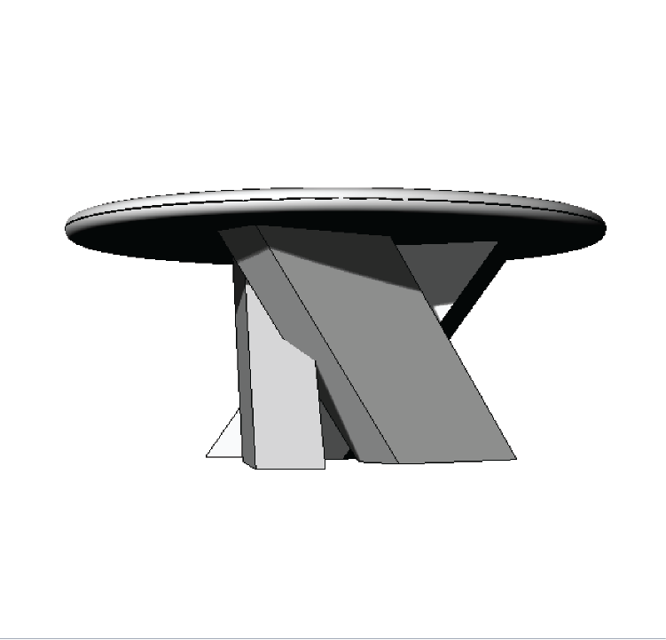
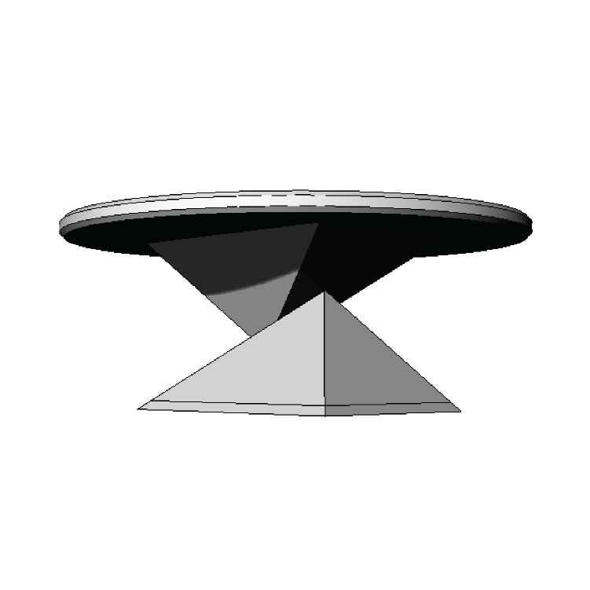
the cake stand then had some form and dimension. it has a 13"-diameter try, should be 6" off the table surface, and be stable enough on which to cut a piece of cake.
my materials list included marble, stainless steel, and black walnut. the finished product adhered to a simpler marble and black walnut motif as it then matched the other items i had made for the young couple.
my materials list included marble, stainless steel, and black walnut. the finished product adhered to a simpler marble and black walnut motif as it then matched the other items i had made for the young couple.
modeling the physical item in foam allowed for quick adjustments without an extensive amount of work.
using foam, i was able to remain flexible on the size, shape, and interactions of each piece of the stand.
using foam, i was able to remain flexible on the size, shape, and interactions of each piece of the stand.
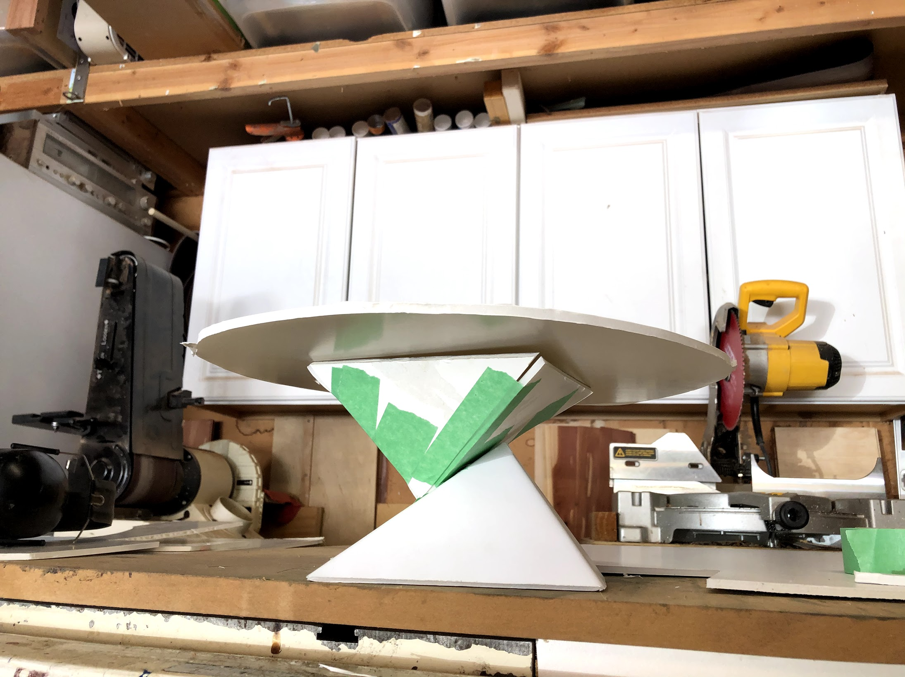
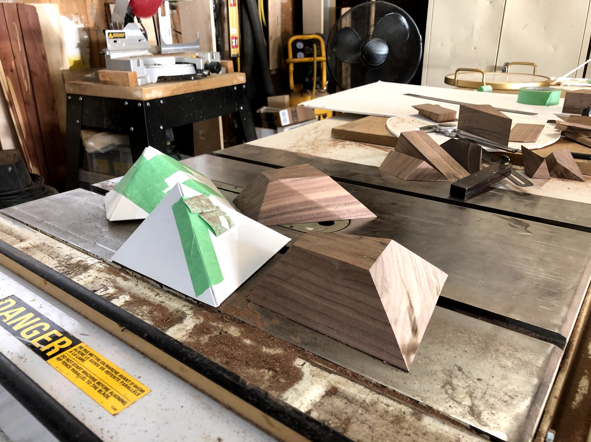
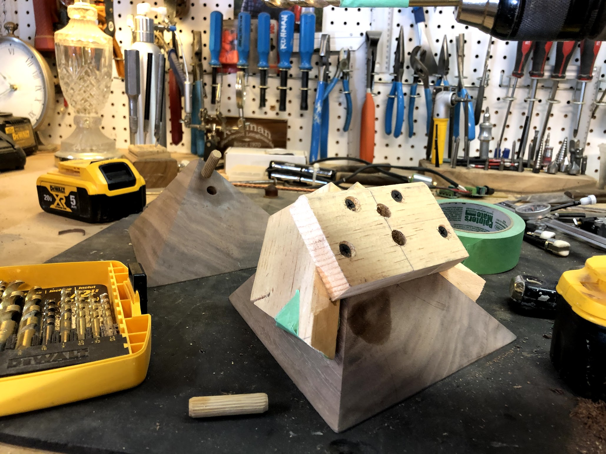
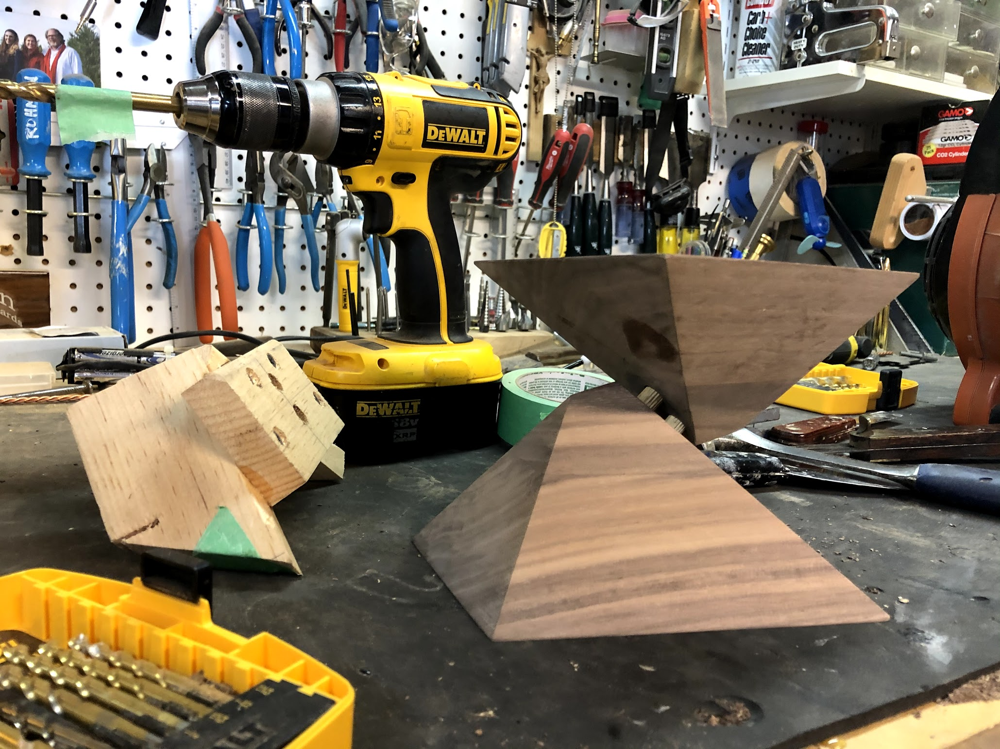
a cake stand really won't ever have a significant weight placed onto it - in theory.
i decided to dowel the pieces together as a precaution as relying on about one-square-inch of end-grain glue surface was far too much of a risk.
creating custom jigs like this one to ensure perfect alignment has been one of my most crucial skill i've mastered. the ability to create a guide with which to expertly produce the final product greatly attributes to my success in everything i do.
i decided to dowel the pieces together as a precaution as relying on about one-square-inch of end-grain glue surface was far too much of a risk.
creating custom jigs like this one to ensure perfect alignment has been one of my most crucial skill i've mastered. the ability to create a guide with which to expertly produce the final product greatly attributes to my success in everything i do.
finally, as the finishing touch - i inlayed a woodburned plaque to commemorate the wedding of the recipients.
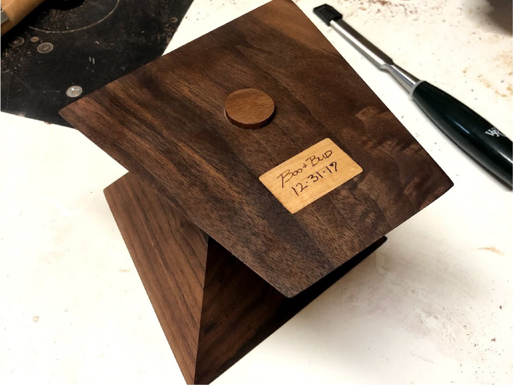